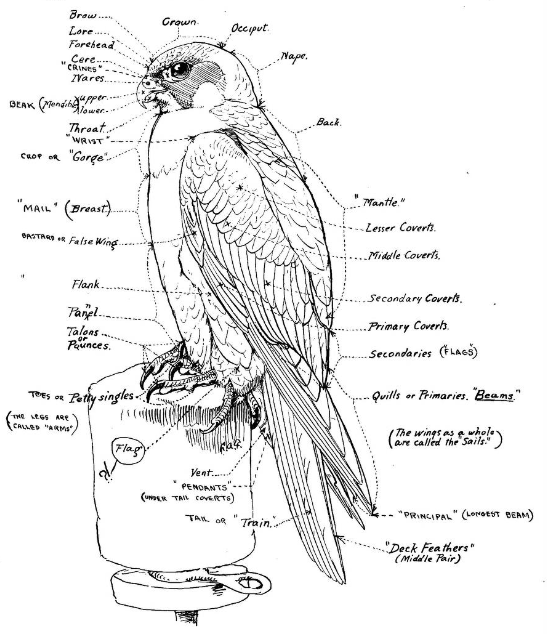

Resources → Reference
Falconry Rules by State: 50-State Permit Guide
Falconry in the United States is regulated at both the federal and state level. While the U.S. Fish & Wildlife Service sets baseline standards, each state wildlife agency adds its own requirements for permits, species, and facilities. This guide covers the federal framework and provides a state-by-state reference table.
Federal Framework
All falconry in the United States falls under the Migratory Bird Treaty Act (MBTA) and is administered by the U.S. Fish & Wildlife Service (USFWS). Federal regulations are codified in 50 CFR 21.29 and establish minimum standards that every state must meet or exceed.
Key federal requirements include:
- Three-tier licensing: Apprentice (minimum 2 years), General (minimum 5 additional years), and Master.
- Written examination: Every applicant must pass a state-administered exam covering raptor biology, training, regulations, and care.
- Facilities inspection: An approved mews must be inspected and pass before a permit is issued.
- Sponsor requirement: Apprentices must have a General or Master falconer as a sponsor for the duration of the apprenticeship.
- Species restrictions: Apprentices are federally limited to Red-tailed Hawks and American Kestrels. Some states further restrict or expand this list.
- Reporting: Falconers must report acquisitions, transfers, and losses through the USFWS 3-186A form system.
Permit Levels Explained
| Level | Time Required | Max Birds | Species Allowed |
|---|---|---|---|
| Apprentice | Minimum 2 years | 1 | Red-tailed Hawk or American Kestrel (federal default; some states allow additional species) |
| General | Minimum 5 years after Apprentice | 3 | Most North American raptors except endangered/threatened species |
| Master | After General | 5 | All legally available species, including eagles (with special permit) |
50-State Reference Table
The table below summarizes key falconry regulations for all 50 states. Regulations change periodically—always verify current rules with your state wildlife agency before applying.
| State | Agency | Min. Apprentice Age | Permit Fee | Notable Rules |
|---|---|---|---|---|
| Alabama | AL DCNR | 12 | $25 | Apprentices limited to Red-tailed Hawk or American Kestrel. Hunting license also required. |
| Alaska | AK DFG | 12 | $30 | Gyrfalcon take allowed for Master falconers by special permit. Short trapping seasons. |
| Arizona | AZ GFD | 14 | $25 | Harris’s Hawk available to General and Master falconers. Year-round hunting for some species. |
| Arkansas | AR GFC | 12 | $15 | Standard federal framework. Must have hunting license. |
| California | CA DFW | 14 | $75 | Strict facility requirements. Apprentices may only take passage Red-tailed Hawks. No take of Cooper’s Hawks. |
| Colorado | CO CPW | 14 | $50 | Prairie Falcon take allowed for General falconers. Active falconry community. Annual reporting required. |
| Connecticut | CT DEEP | 12 | $30 | Small state with limited hunting areas. Standard federal species for apprentices. |
| Delaware | DE DNREC | 14 | $35 | Standard three-tier system. Relatively few active falconers. |
| Florida | FL FWC | 12 | $50 | Year-round hunting seasons for most quarry. Apprentices: Red-tailed Hawk or American Kestrel only. |
| Georgia | GA DNR | 12 | $30 | Standard federal framework. Must purchase hunting license separately. |
| Hawaii | HI DLNR | N/A | N/A | Falconry is legal but extremely restricted. No native raptors available for take; birds must be captive-bred and imported. |
| Idaho | ID FG | 12 | $22 | Prairie Falcon and Goshawk available at General level. Strong raptor populations. |
| Illinois | IL DNR | 16 | $25 | Higher minimum age than federal standard. Must show proof of sponsor before exam. |
| Indiana | IN DNR | 14 | $25 | Standard three-tier system. Active falconry club. |
| Iowa | IA DNR | 14 | $25 | Apprentices limited to Red-tailed Hawk or American Kestrel. Standard framework. |
| Kansas | KS DWPT | 14 | $25 | Excellent pheasant and rabbit hawking country. Standard permit tiers. |
| Kentucky | KY DFW | 12 | $25 | Standard federal framework. Annual permit renewal required. |
| Louisiana | LA WLF | 12 | $25 | Year-round hunting for certain quarry. Standard apprentice species. |
| Maine | ME IFW | 14 | $26 | Limited trapping season. Cold winters require insulated mews. |
| Maryland | MD DNR | 14 | $30 | Relatively strict facility inspections. Must have hunting license. |
| Massachusetts | MA DFW | 14 | $30 | Strict environmental regulations. Active falconry club supports new apprentices. |
| Michigan | MI DNR | 14 | $25 | Strong raptor populations. Standard three-tier system. |
| Minnesota | MN DNR | 14 | $25 | Cold climate considerations for mews. Good Goshawk country for General falconers. |
| Mississippi | MS DWFP | 12 | $25 | Standard federal framework. Relatively few falconers. |
| Missouri | MO MDC | 14 | $25 | Strong conservation department. Standard permit structure. |
| Montana | MT FWP | 14 | $25 | Excellent raptor diversity. Prairie Falcon take available at General level. |
| Nebraska | NE GPC | 14 | $25 | Good pheasant and rabbit country. Standard three-tier system. |
| Nevada | NV NDOW | 14 | $25 | Desert species available. Harris’s Hawk at General level in southern regions. |
| New Hampshire | NH FG | 14 | $25 | Small state with active club. Standard federal framework. |
| New Jersey | NJ DFW | 14 | $30 | Dense population limits hunting access. Standard apprentice species. |
| New Mexico | NM DGF | 14 | $25 | Harris’s Hawk available in the wild. Excellent desert hawking. |
| New York | NY DEC | 14 | $40 | Comprehensive regulations. Annual reporting and facility inspections. Active falconry scene. |
| North Carolina | NC WRC | 16 | $25 | Higher minimum age. Standard three-tier system. |
| North Dakota | ND GFD | 14 | $25 | Open prairie provides good hunting. Standard federal framework. |
| Ohio | OH DNR | 14 | $25 | Standard three-tier system. Active falconry organization. |
| Oklahoma | OK DWC | 12 | $25 | Good raptor diversity. Harris’s Hawk at General level. Strong hunting culture. |
| Oregon | OR DFW | 14 | $35 | Peregrine take restricted. Must complete online course before exam. |
| Pennsylvania | PA PGC | 12 | $30 | Strong falconry community. Apprentices: Red-tailed Hawk or American Kestrel. Active club mentorship programs. |
| Rhode Island | RI DEM | 14 | $25 | Small state, limited hunting areas. Standard framework. |
| South Carolina | SC DNR | 12 | $25 | Standard federal framework. Year-round hunting for some quarry. |
| South Dakota | SD GFP | 14 | $25 | Excellent upland game country. Standard three-tier system. |
| Tennessee | TN TWRA | 12 | $30 | Standard federal framework. Must have hunting license. |
| Texas | TX PWD | 14 | $30 | Large state with diverse raptor populations. Harris’s Hawk available in south Texas. Year-round rabbit hunting. |
| Utah | UT DWR | 14 | $30 | Good raptor diversity. Prairie Falcon and Ferruginous Hawk at General/Master level. Active community. |
| Vermont | VT FWD | 14 | $25 | Small falconry community. Cold-weather mews requirements. Standard framework. |
| Virginia | VA DWR | 12 | $25 | Standard three-tier system. Active falconry club with mentorship programs. |
| Washington | WA DFW | 14 | $40 | Strict facility standards. Must complete education requirement. Strong raptor populations. |
| West Virginia | WV DNR | 14 | $25 | Standard federal framework. Mountainous terrain provides diverse hunting. |
| Wisconsin | WI DNR | 14 | $25 | Cold climate mews considerations. Standard three-tier system. |
| Wyoming | WY GFD | 14 | $25 | Excellent raptor habitat. Prairie Falcon and Ferruginous Hawk available at higher levels. Low human population density means ample hunting land. |
District of Columbia
The District of Columbia does not have a falconry program. Residents of D.C. cannot obtain a falconry permit within the district. However, some D.C. residents pursue falconry by obtaining permits in neighboring Virginia or Maryland, where they keep their birds and hunt. This requires meeting all requirements of the issuing state, including having an approved mews within that state’s jurisdiction.
Tips for Applying
- Start with your state wildlife agency’s website. Search for “falconry permit” on your state’s fish and game or wildlife department site. Regulations are updated periodically, so always use the most current version.
- Study before you contact a sponsor. Read at least one comprehensive falconry text and study your state’s exam material before approaching potential sponsors. Sponsors want to see that you are serious and self-motivated.
- Build your mews first. Many states will not schedule a facilities inspection until your mews is complete. Plan construction well in advance of when you want to trap or acquire a bird.
- Join your state falconry club. State chapters of the North American Falconers Association (NAFA) are the best way to meet active falconers, find sponsors, and stay current on regulatory changes.
- Budget for the exam fee. Most states charge $10–$30 for the written exam. You can typically retake it after a waiting period if you do not pass on your first attempt.
Find Falconry Schools Near You
Connect with certified falconry instructors who can help you prepare for your state exam and find a sponsor.
Browse SchoolsAre You a Falconry Mentor?
List yourself in our directory so apprentices in your area can find you.
Add Your Listing